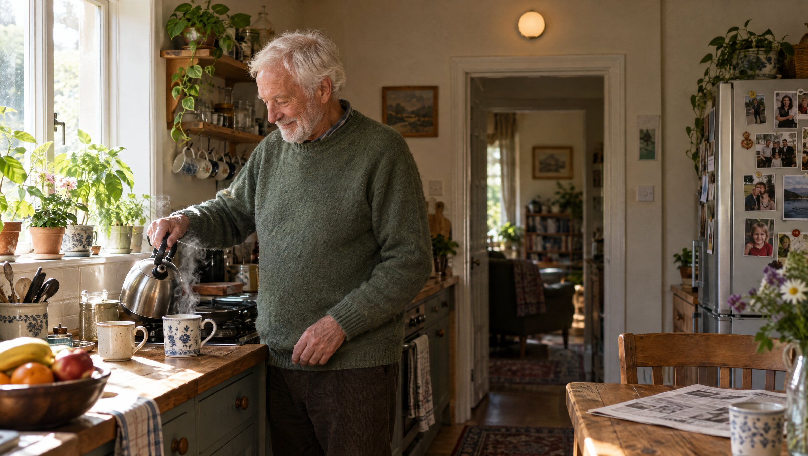
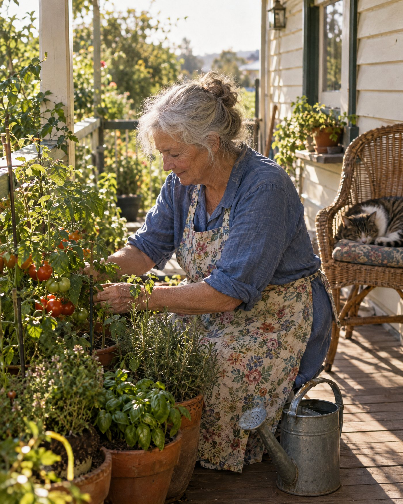

A fall at 2 am
It knows the minute it happens, not at nine when someone calls in.

Florence is a family of lights and furniture that quietly look out for the people who live with them. No camera. Nothing to wear.
The light above the kitchen door noticed Dad was up at six, made his tea and read the paper. So nobody had to ring and ask.
It knows the minute it happens, not at nine when someone calls in.
Resting heart rate and breathing, read from across the room. No strap, no patch, no watch to charge.
Time is the signal. It counts the minutes so nobody has to knock.
Sleep, restlessness and trips out of bed. A slow change over weeks is often the first sign of something.
Too hot, too cold, too stuffy. Comfort is health.

Up, about and busy. The ordinary days are the ones families most want to hear about.
The alert goes to whoever can actually help.

Nobody wants to be checked on every morning. A quiet note for you, and her independence left alone.
The same sensing comes as one slim tile for the ceiling. It suits a rented flat, an aged care room or disability housing, fitted like a smoke alarm.


Tell us about the home or the building, and we'll show you where Florence would go.